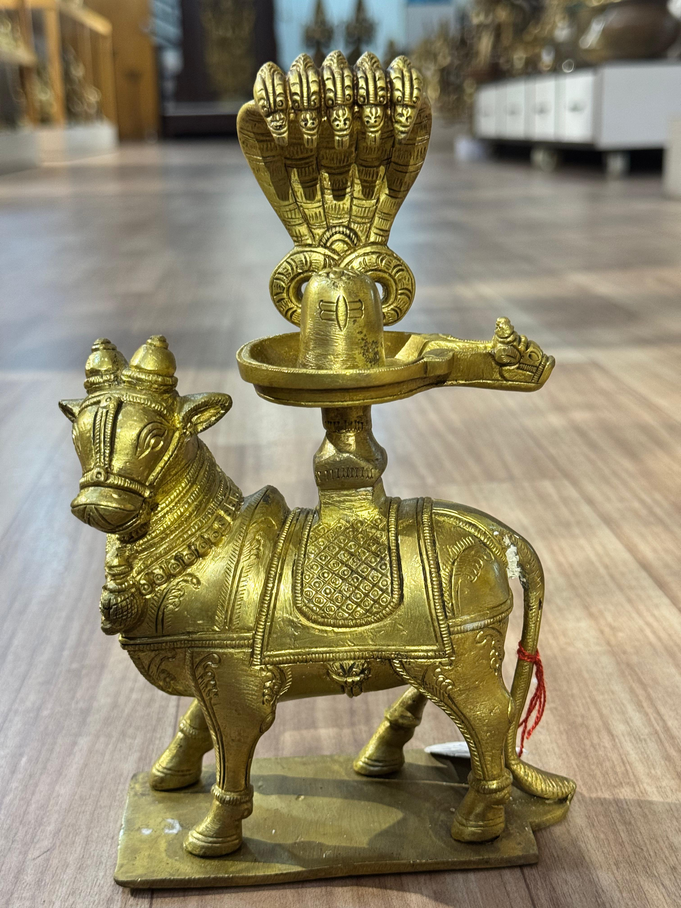
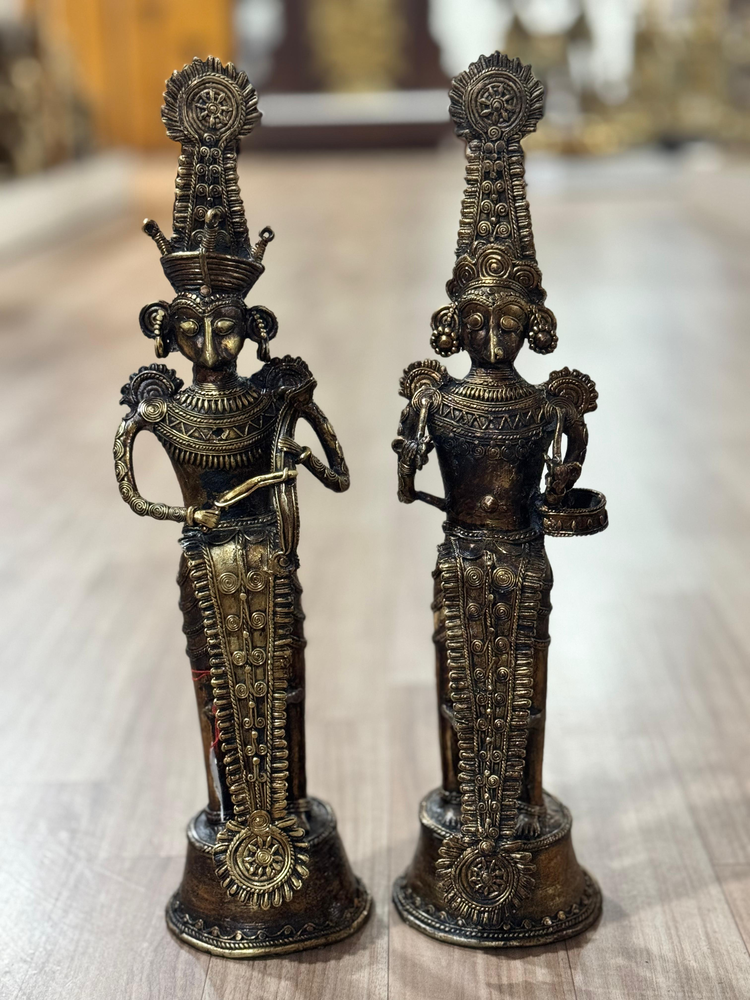
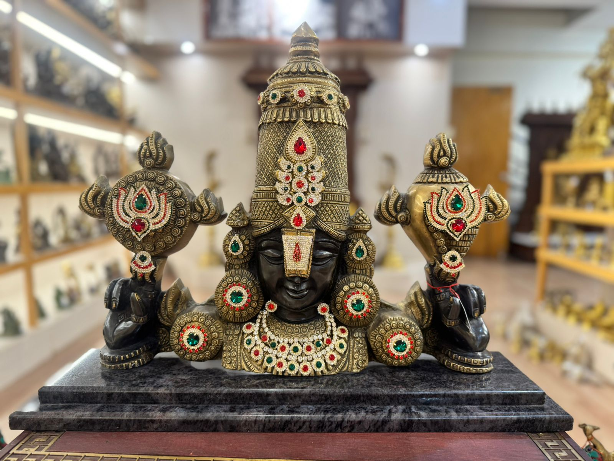
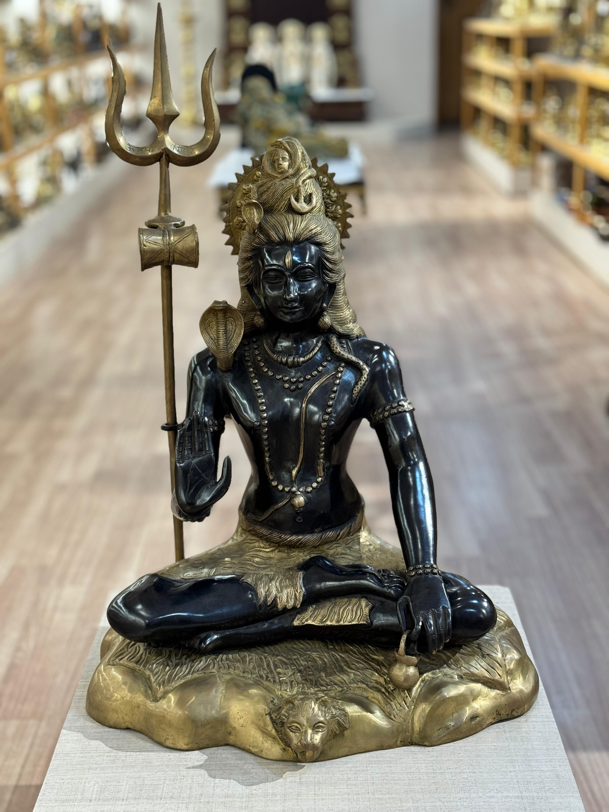
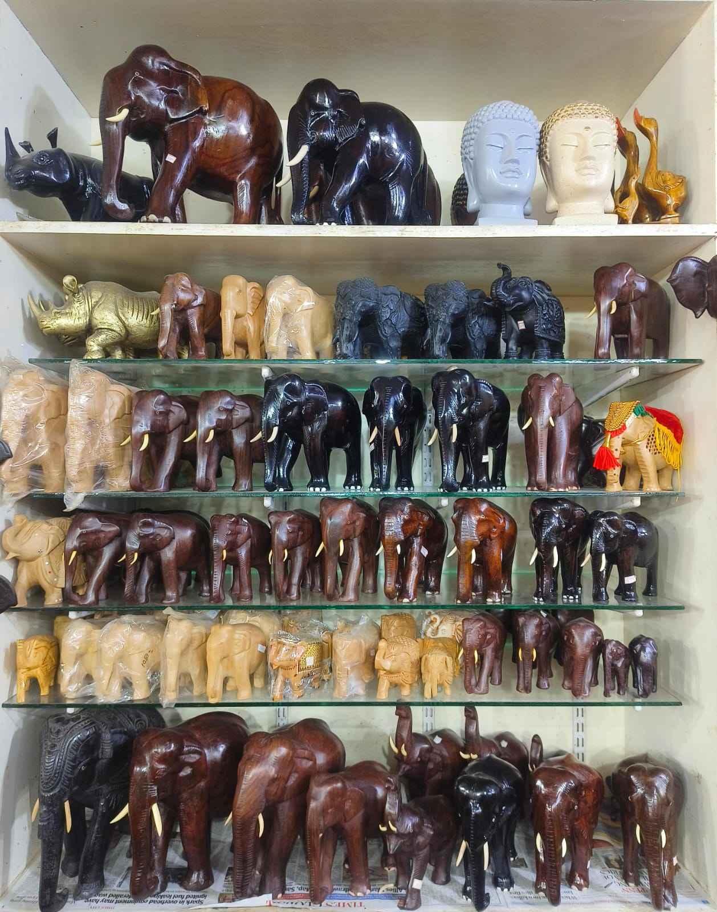
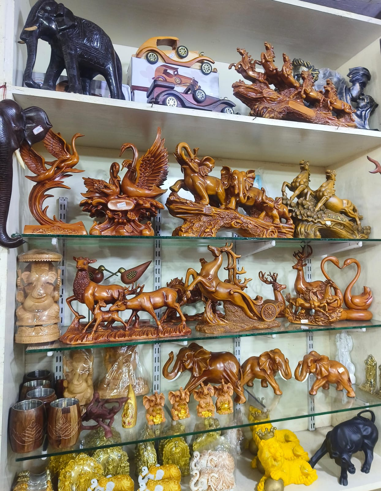
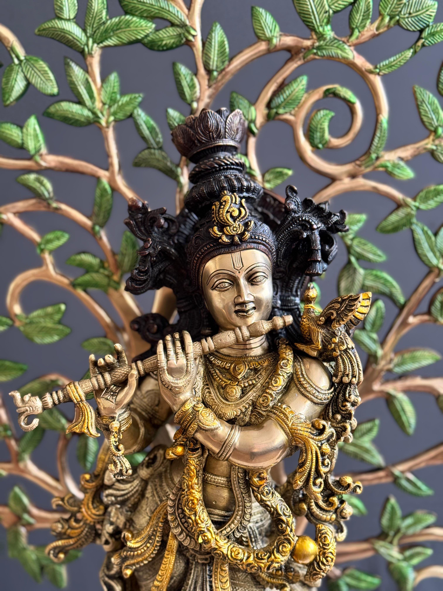

The Story of Sri Kanya: Born on Sannathi Street
Serving the Pilgrims of Cape Comorin
Born on the historic Sannathi Street, Sri Kanya Handicrafts began as a humble offering to the countless seekers and pilgrims journeying to the 3,000-year-old Arulmigu Bhagavathy Amman Temple. For generations, our family has stood at the sacred threshold of the three merging oceans, watching the tides and the devout merge in perfect unison.
We do not merely sell souvenirs; we curate the very soul of Kanyakumari. Each rosewood deity, brass lamp, and polished shell we present carries the incense-scented air of the temple road and the spiritual resonance of the waves, offering travelers a sacred piece of their journey to take back home.



Deep Traditions, Decades of Craft
Behind the silent beauty of our wooden carvings lies the sweat and devotion of South India's living masters. Over the decades, we have forged unbreakable bonds with local hereditary artisans who have inherited their skills from ancestors who built the stone temples of old.
Every fine detail—from the soft curve of Ganesha's trunk to the intricate scrollwork of our heritage mirror frames—is carved by hand from premium timber. By keeping these artisans connected to the global stage, we help preserve a dying language of tools and wood, ensuring that their unmatched mastery survives for generations to come.



Bringing the Triveni Sangam to the World
The Triveni Sangam is a place of profound union—where the Arabian Sea, the Bay of Bengal, and the Indian Ocean wash away boundaries in a single, roaring tide. Our mission is to mirror this beautiful confluence by bringing the spiritual peace, natural brilliance, and artistic legacy of India's southernmost tip directly to your home.
We believe that art is a bridge, and every piece of hand-carved wood or polished ocean shell in your living room should serve as a daily window to the sacred waters of Cape Comorin, carrying blessings and master craftsmanship across continents.


